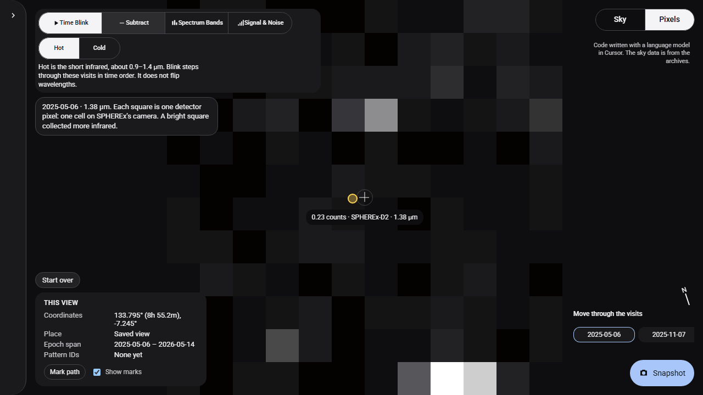
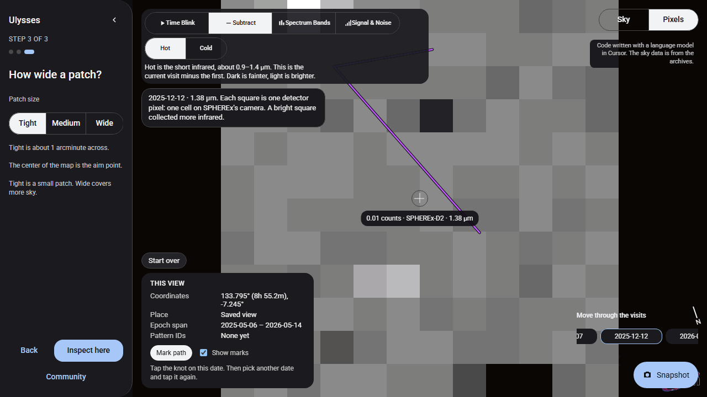

PROJECT
ULYSSES
Turning Public Curiosity into Verified Data Triage for NASA’s SPHEREx Mission
NASA Space Apps 2026 • Planet X & SPHEREx01 / 07
LOVE SPACE, BUT NO TELESCOPE? No Problem!
NASA’s SPHEREx generates enormous amounts of data, but existing sky tools look like cockpit dashboards—locking out everyday people and leaving researchers buried in raw telemetry. Project Ulysses simplifies real telescope observations so anyone can explore the cosmos and spot real motion in five minutes.
02 / 07
BE A HERO! IN YOUR COMMUNITY
Space exploration shouldn’t be limited to people behind a telescope. With Project Ulysses, everyday people become citizen scientists—learning to read real SPHEREx infrared imagery, subtracting static stars, and flagging moving objects that deserve a closer look.
They aren’t just watching discoveries happen. They’re helping NASA decide where to look next—with zero learning curve.

1. Live NASA DR1 Data
2. Static Stars Erased
3. Hot vs. Cold Thermal View
03 / 07
BRIDGING THE GAP: PEOPLE ↔ NASA
The Public Contributes Observations. Users trace moving light across dates and capture snapshots that lock their exact coordinates and settings in the URL—giving NASA’s SPHEREx Science & Archive Team (Caltech/IPAC) peer-audited candidates instead of noisy guesses.
NASA Contributes Scientific Judgment. Pre-vetted snapshots cut expensive PhD manual triage, require zero server overhead, and generate clean labeled data to train future models—while experts share findings back with the community.

1. Trace Real Motion
2. URL-Locked Proof
3. Direct Handoff to NASA/IPAC
04 / 07
MACHINES PROCESS, HUMANS EXPLORE
Why AI Hits a Wall
Planet X has never been photographed—AI has zero training examples to learn from, and turning sensitivity up to catch faint objects floods scientists with millions of false positives.
Why Human Eyes Win
Human pattern recognition spots subtle moving anomalies in noisy frames without 50,000 training labels—which is why citizen scientists have already discovered 3,000+ brown dwarfs that algorithms missed.
AI can accelerate processing, but Project Ulysses celebrates the irreplaceable spark of human curiosity—inviting everyday people to step in, hone their scientific instincts, and leave their mark on what we find.
05 / 07
FOUR MOVES. THEN A CANDIDATE.
THE OUTCOME
The first blink leaves the specialist’s desk. What comes back is a marked frame and a link.
06 / 07Usable enough to hand off
JOIN US ON THIS JOURNEY!
QUESTIONS?
Project Ulysses • Open-Standard URL Triage for NASA’s SPHEREx Archive07 / 07